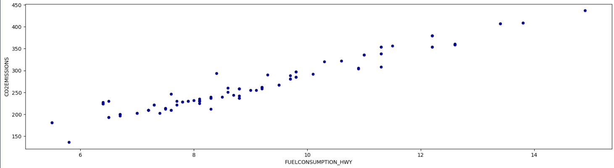
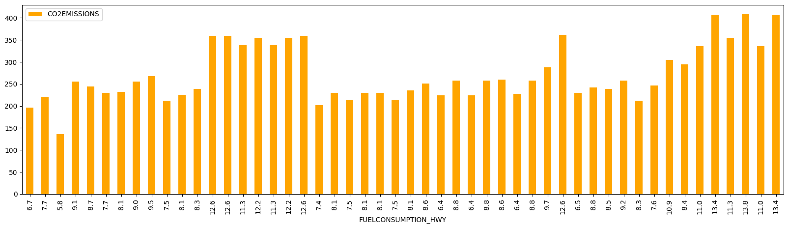

Instalación e Importación
Instala e importa las librerías necesarias.
# Instalación vía conda
conda install pandas numpy matplotlib
# Importación estándar
import pandas as pd
import numpy as np
import matplotlib.pyplot as plt
Otras operaciones
# Tipo de dato
type(s3)
# Crear una Serie con un rango de números
numeros = np.arange(1, 10, 1)
serie_numeros = pd.Series(numeros, index=numeros)
cuadrados = serie_numeros ** 2
cuadrados
Series
Array unidimensional etiquetado.
Crear una Serie
# A partir de un array de numpy
s1 = pd.Series(np.array([1,2,3,4,5,6]))
# Con índices personalizados
notas = np.array([5,10,7,8])
alumnos = np.array(["Estudiante 1","Estudiante 2","Estudiante 3","Estudiante 4"])
s2 = pd.Series(notas, index=alumnos)
# Desde un diccionario
notas_dict = {'Estudiante 1': 5, 'Estudiante 2': 10}
s3 = pd.Series(notas_dict)
Asignación de valores
s3['Estudiante 1'] = 10
s3[1] = 8
s3[2:] = 9
DataFrames
Estructura bidimensional similar a una tabla.
Crear un DataFrame
# Desde un diccionario de Series
asignaturas = ['Asignatura 1','Asignatura 2']
notas = {
'Estudiante 1': pd.Series([10,2], index=asignaturas),
'Estudiante 2': pd.Series([9,6], index=asignaturas)
}
df1 = pd.DataFrame(notas)
# Desde un diccionario de listas
notas_list = {'María': [10,2,5,6], 'Jose':[9,6,7,4.5]}
df2 = pd.DataFrame(notas_list)
df2.index = ['Asignatura 1','Asignatura 2','Asignatura 3','Asignatura 4']
Lectura y Escritura
Cargar y guardar datos desde/hacia archivos.
# Leer desde un CSV
df = pd.read_csv("data/FuelConsumption.csv")
# Leer CSV con parámetros
# df_custom = pd.read_csv("data.csv", sep=';', header=1)
# Escribir a un CSV
df.to_csv('nuevo.csv', index=False)
Inspección de Datos
Funciones para una visión general del DataFrame.
df.info() # Resumen del conjunto (tipos, nulos)
df.head() # Muestra las primeras 5 filas
df.shape # Dimensiones del conjunto (filas, columnas)
df.keys() # Obtiene los nombres de las columnas o claves del df
df.dtypes # Tipos de datos de cada columna
df.nunique() # Número de valores únicos (distintos) por columna
Selección y Filtrado
Acceder a subconjuntos de datos.
Selección
# Acceder a un elemento
df.iloc[0,2] # Por posición
df.at[2,'ENGINESIZE'] # Por etiqueta
# Seleccionar columnas
df['ENGINESIZE'] # Como Serie
df[['ENGINESIZE','CO2EMISSIONS']] # Como DataFrame
Filtrado
# Filtrado condicional
df_filtrado = df[df['CYLINDERS'] > 6]
# Múltiples condiciones
df_multi = df[(df['CYLINDERS'] > 6) & (df['MAKE'] == 'BENTLEY')]
Modificación del DataFrame
Añadir o eliminar columnas.
# Añadir una columna
df.insert(1, 'ES_FORD', df['MAKE'] == 'FORD')
# Borrar una columna
del df['ES_FORD']
Operaciones y Agregaciones
Calcular estadísticas y agrupar datos.
# Media de la Serie
s3.mean()
# o
np.mean(s3)
# Conteo de valores
df['MAKE'].value_counts()
# Agrupación (Group By)
df.groupby('MAKE')['CO2EMISSIONS'].mean()
Gráficas
Visualización rápida de datos.
Gráfica de Puntos (Scatter)
df[0:100].plot(
kind='scatter',
x='FUELCONSUMPTION_HWY',
y='CO2EMISSIONS',
color='DarkBlue',
figsize=(20,5)
)
plt.show()
Resultado

Gráfica de Barras
df[0:50].plot(
kind='bar',
x='FUELCONSUMPTION_HWY',
y='CO2EMISSIONS',
color='Orange',
figsize=(20,5)
)
plt.show()
Resultado
